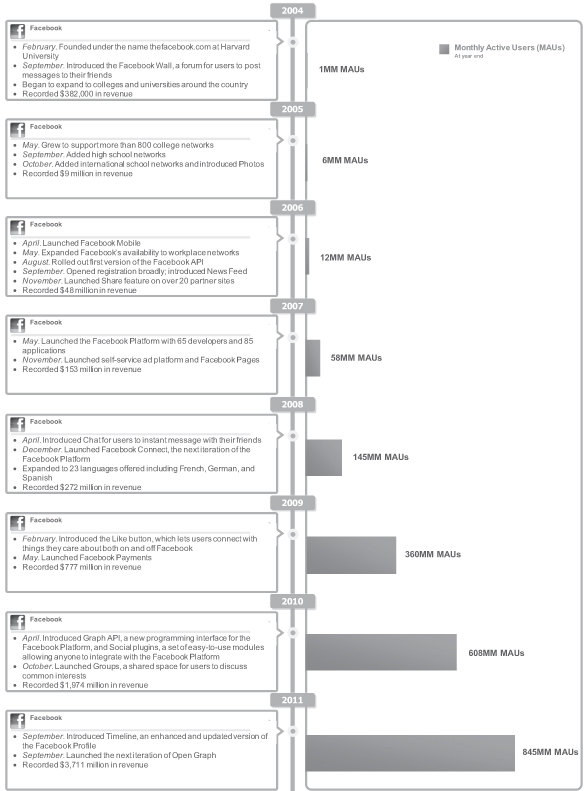
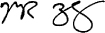
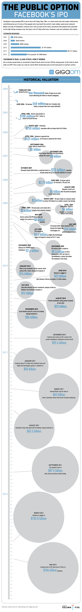

SEC：美国证券交易委员会
PROSPECTUS：招股说明书
FORM S-1：公司使用S-1报表对证券进行注册登记，S-1必须包括过去三年经审计的财务报表，和证券的相关风险因素。主要包括以下几个方面：
REGISTRATION STATEMENT：有价证券上市登记表，在美国，上市登记表包含一系列文档，包括必须在SEC备案的prospectus。登记表主要包含两个部分：
UNDERWRITER：承销商，是指在股票发行中独家承销或牵头组织承销团经销的证券经营机构。国际上，承销商一般由信誉卓著、实力雄厚的商人银行，投资银行及大的证券公司来担任。在我国，一般则由具有资格的证券公司或兼营证券的信托证券公司来担任。承销商是股票发行人聘请的最重要的中介机构。它既是股票发行的承销商。又是发行人的财务顾问，且往往还是发行人上市的推荐人。如果发行人向全球发行股票，这时的承销商又是为发行人发行股票的全球协调人。
OVER-ALLOTMENT OPTION：超额配售选择权，俗称“绿鞋”。指发行人授予主承销商的一项选择权，获此授权的主承销商按同一发行价格超额发售不超过包销数额15% 的股份，即主承销商按不超过包销数额115% 的股份向投资者发售。在增发包销部分的股票上市之日起30 日内，主承销商有权根据市场情况选择从集中竞价交易市场购买发行人股票，或者要求发行人增发股票，分配给对此超额发售部分提出认购申请的投资者。主承销商在未动用自有资金的情况下，通过行使超额配售选择权，可以平衡市场对该股票的供求，起到稳定市价的作用。
VESTING SCHEDULE：通常称为股份行权计划,它的作用在于给与整个创业团队或员工的激励作用,特别是对于初创企业,设立vesting schedule的原因如下：没有一个团队是永远的,例如起初创始公司有4个人,如果中途有创业伙伴离开,那它的股份怎么处理? 总不能让一个不出力的股东持有公司的大部分股票;而Vesting Schedules对于一直为公司服务的股东来说是没有效果的。创始人在行权计划未满前离开公司，则其会丧失剩余部分股权。举个简单的例子，假设行权计划设为四年，第一年实现25%，以后三年按照每个月约2%的比例实现。又假设创始人A拥有公司20%的股份，如果他在签订投资协议一年后离开，其所拥有的股份比例实为5%，在这一年中如果发生股东投票事宜，其仍拥有20%的投票权。如果四年期满后他离开，其股份则为20%。同样道理，奖励予管理层的期权一般也会设立行权期，分几年向团队发放。设置行权期目的在于锁定管理团队为公司的服务期限。 当然还存在一种Accelerated Vesting ,这种情况发生在公司被收购或者其他特殊原因,原先需要4年的行权期,可能加速行使一言概之,对于引入VC的创始股东,如果投资人要进来了，自己的股份要分几年才能拿到,这就是vesting schedule的作用。
REPURCHASE OPTION：回购选择权。为了避免出现公司联合创始人在初创期离职造成不合理股权的现象，创始人的股票会根据对公司的贡献程度进行授予。这通过创始人授权公司可以在其股票未授予前离职的情形下以名义价格回购其股票。每隔一段时间会扣除回购权的一部分，直到创始人完全被授予全部股票。比如：三个创始人达成一致，在两年内将每股0.001美元的创始人股票按季度授予。这样每个季度到期后，每个创始人的回购权将会扣除12.5%的股票，两年到期后，创始人的回购权将被全部解除。
FOUR YEARS WITH A ONE YEAR CLIFF：一种典型的股份行权计划。第一年到期后，25%的创始人股票回购权被解除，其后每月解除1/48的股票回购权直到四年期截止，所有的股票回购权都被解除，创始人将完全的拥有股票。
RESTRICTED STOCK AND RSUs：受限股票（restricted stock）指公司向员工发行的带有限制条件的普通股。这些限制条件包括股票授予计划以及股票被授予之后设置的一些出售限制。受限股票的行权计划通常和股票期权（stock option）类似，代表性的方案有Four Years With a One Year Cliff。出售限制通常包括公司对受限股票拥有优先发售权。受限股票的一大优势是你完全拥有你的股票并且不必支出现金去购买。而且如果你在授予之后持股一年以上将有资格获取长期资本收益。当前普通收入和长期资本收益之间的税收政策存在巨大差异，所以这是一个很大的问题。受限股票的一个缺点是你必须为授予的股票纳税。授予股票将以公允市场价格定价征税。RSU是当满足特定的行权计划时承诺发放的受限股票。RSU和期权非常类似，但相比于期权你可以不必行权。RSU允许接收者推迟股票的接收直到股票开始流通。
股票代码：FB
上市时间：5月18日
发行价：38美元
发行量：4.2亿股
计划募资：最高达160亿美元
上市地点：纳斯达克
主承销商：摩根士丹利、摩根大通、高盛等33家
资金用途：补充运营资本和其他一般用途
业绩：2011年营收37亿美元，净利润10亿美元
控股权：扎克伯格持股28.4%，机构Accel持股11.4%
- 业务和行业相关风险
用户群和互动程度是我们成功的关键。2011年12月30日的数据显示我们拥有845,000,000的月活跃用户数。我们的财政状况很大程度上取决于活跃用户的维护。我们预期随着活跃用户基数和市场渗透率的提高，用户增长比率将会下降。影响用户数的因素包括：
- 我们收入中大部分来源于广告，因此广告商的流失，或投入的减少都将对我们的业务产生极大的损害。
2009至2011年间，第三方广告带来的收益占Facebook总收入比重分别为：98%、95%、85%。广告商通常并未与我们签订长期的广告合同，许多合作广告商与我们签署的合同只占他们广告预算的一小部分，而且，大部分广告商将我们的赞助商故事和社交相关广告视为实验性质的。因此如果我们的广告展示方式没有产生有效的回报，广告商将缩减广告支出甚至终止与我们的合作。影响广告收入的因素包括：
- 移动客户端用户的增加将会对我们的收益和财政状况产生不利影响
2011年12月的数据显示我们拥有425,000,000的移动MAU数目。由于我们对移动客户端的研发投入增加以及用户使用习惯的转变，移动客户端的MAU将会增速更快，因此如果我们无法制定有效的移动端盈利模式，我们的收益和财政状况将会受到负面影响。
- 移动客户端用户数的增加依赖于移动操作系统、网络和标准等我们无法掌控的因素
为了提升Facebook在移动客户端的用户体验，我们支持一系列的移动系统、网络和标准，如果其中一些发生变化，可能就会对我们移动客户端用户数造成影响。
- Facebook平台无法提升和套现
我们可能无法在用户体验和平台开发者之间做出有效的平衡。目前Facebook平台的套现策略包括：在app页面上投放广告、平台开发者直接投放广告以吸引流量、开发者使用支付框架向用户出售虚拟数字产品的中间费用。如果这些平台开发者开发的app无法保留或增加用户量，将对我们的收益产生不良影响。
- 我们的商业属于高竞争行业，竞争对手将对我们产生持续的威胁
我们业务的每个方面都面临着竞争威胁，包括：Google，Microsoft、Twitter等。还面临着传统和在线媒体商业的竞争。具有代表性的竞争产品包括Google的Google+，以及在某些国家具有优势地位的区域性产品，包括：韩国的Cyworld、日本的Mixi、印度和巴西的Orkut、俄罗斯的vKontakte。我们可能还面临着将来在中国的竞争产品：人人、新浪和腾讯。当前和潜在的竞争者在某些市场上具有更好地资源和更有竞争力的地位。某些竞争者比如Google，可能使用它在某些市场的优势资源来和我们进行竞争，比如将社交网络平台和特性集成到他们的产品中：搜索引擎、浏览器、移动操作系统等。
- 某些国家政府限制对Facebook的访问将极大的损害我们的收益状况
某些政府可能会禁止Facebook在本国的使用，或限制部分功能。比如当前Syria、Iran、China和North Korea禁止访问Facebook。
- 我们对Facebook平台的提升可能导致用户流向开发者们集成的站点，这可能会影响我们的收入状况
- 我们鼓励工程师快速开发和运行新产品，但是这些产品中的一部分可能会损害我们的短期收益
- 公司声誉可能会受到损害
- 用户信息泄露
- 不利的媒体报导
- 季度财报可能波动较大难以预测
- 当前收益极大依赖于和Zynga的合作关系
- 用户数和收益将会衰退
- 涉及隐私、数据保护和其他方面的法律法规
- 法规政策性投资
- 知识产权保护
- 专利等知识产权诉讼
- 数量众多的持续的集体诉讼
- CEO拥有对公司关键决策的控制权
- RSU首次结算
- A级普通股价格可能下跌，低于我们的IPO价格
A级普通股价格由我们和承销商商议协定，可能会受到各种因素的影响而产生波动：
- lock-up期或market standoff期过后可能会有大量的股份出售，这将降低A股价格
MAU和DAU基于公司内部收集的数据，但是可能存在：一人使用多个账号、移动端自动更新误以为用户登录，但所占比重应该不超过5%。
我们预估发行的A级股收入将达到？美元，如果承销商行使超额配售权将达到？，扣除承销折扣、雇佣费用和发行费用，每股IPO价格将增加1美元。我们IPO的主要目的是为我们的A级流通股创造一个公开市场、并方便以后的再融资和股权分配。但是目前我们还没有明确的使用计划。
我们从未申报或支付现金股利，我们还将在可预见未来范围内保留收入用于商业用途而不会申报或支付现金股利。
如果您投资我们的A级普通股，您的利息将被稀释至IPO发行价格和IPO之后有形资产账面净值之差。2013年12月31日我们的有形资产账面净值为？元，或者为每股？元。我们的形式有形资产账面净值计算为：（总资产-总债务）/ 总发行股数。
概述
我们的使命是让世界更加开放，联系更加紧密。Facebook让您可以迅捷方便的表达自己、与世界进行联系。
我们通过为用户、开发人员和广告商创建可用设施从而构建产品来实现我们的使命。
用户：我们使用户保持与亲朋好友的联系、发现世界周边的新闻、向他们关心的人分享和表达他们身边的事。
开发人员：我们使开发人员可以利用Facebook的基础架构建构与Facebook集成的app和网站，访问全球的Facebook用户；创建更加个性化、社交化和更具吸引力的产品。
广告商：我们使广告商与Facebook超过8亿的MAU用户或基于用户分享的年龄、位置、性别或兴趣等选取的部分用户群建立联系。我们为广告商提供独一无二的基于范围、相关性、社交上下文以及？（engagement ）的组合来提高广告的展示价值。
我们几乎全部的收入都来自于广告以及用户通过支付平台向开发者购买的虚拟和数字产品。
截至2011年12月31日，收益3,711,000,000、运营收入1,756,000,000、网络收入1,000,000,000。Facebook成立于2004年，总部设在Menlo Park, California。
下图展示了Facebook的历史：

用户指标趋势
业绩影响因素
MAU、DAU和移动DAU的增长将会显著影响我们投放的广告数、广告价值、支付交易以及费用和资本支出，进而影响我们的收益和财务业绩。
除此以外，用户参与模式的改变也会影响我们的收益和财务业绩。我们认为用户生成内容和产生回馈的比率仍然保持稳定增长。
通过变更广告管理策略改变投放广告的数量、大小以及突出性等也会对我们的收益和财务业绩产生影响。例如：2010年第4季度，我们大幅增加了Facebook页面的广告投放量。而在2011年第4季度，我们提高了广告投标系统中的最低投标价格以减少向用户投放低质量广告。这个变化导致总的广告显示数量减少，而广告的平均价格出现了提升。我们预期这两个因素的变化总体上不会带来波动。
我们持续改进产品以提升用户体验。2011年9月，在我们的F8会议上，发布了时间轴产品，作为用户资料的升级版，时间轴可以让用户更加方便的管理自己的更新、图片、评论等内容。同样在2011年9月，我们发布了开放图形API的下一个迭代，支持开发者创建新的社交软件。
经营业绩组成
收益：收益主要来源于广告展示和通过支付平台购买虚拟或数字产品。
广告：广告收入来自于网站的广告展示。广告商基于广告的展示次数或用户的点击数直接或通过广告代理商间接的向Facebook支付费用。
支付平台：用户通过Facebook可以向开发者支付费用。用户可以使用信用卡、PayPal或其他Facebook平台支持的支付手段进行支付。Facebook从每次支付行为中收取一定费用。我们强制所有的游戏应用采用Facebook的支付框架进行支付。迄今为止，Zynga上的游戏已经为我们带来的巨大的支付和其他收益。
收益和运营成本
收益成本：主要涉及产品的投放和分发。主要包括：数据中心设施、服务器设备折旧费、服务器租用费、能源和带宽费用、支持和维护费用以及运营团队的薪水、福利和股票收益。
市场和销售：主要包括：销售、销售支持、市场、业务开发和客户服务部门员工的薪水、福利和股票收益。
研发：工程师和技术团队的薪水、福利及股票收益。
行政：包括：高管、财务、法律、人力资源及其他管理人员。
股份薪酬费用
我们向员工和本公司董事会成员发放了RSU。2011年1月1日之前发放的RSU需同时满足服务条款和流通条款才可授予。服务条款要求为公司工作四年以上。流通条款定义为管理权变动或IPO之后六个月。
截至2011年12月31日，由于支付条件没有满足，我们没有为2011年之前发放的RSU支付任何费用。如果2011年12月31日之前我们能够完成IPO，那么将支付9.68亿的股份薪酬。到2018年四年期的服务条款满足时还将支付2.39亿的股份报酬。2011年之后发放的RSU不受流通条款的限制，服务条款要求的年限是4~5年。2011年预期将为这批RSU支付1.89亿元。
截至2011年12月31日，有未确认股份报酬24.63亿，其中23.96亿和RSU相关，0.67亿和受限股份以及期权相关。
Facebook最初的理想不是成立一家公司，而是想实现一个社会使命-让世界更加开放、联系更加紧密。
对于每一个投资者而言，理解这个使命的意义、理解我们如何做出决策、以及为何我们从事当前的工作，是一件非常重要的事情。我将在这封信里阐述我们的方法。
Facebook受到很多颠覆人们传播和消费信息方式技术的鼓舞，我们经常谈论像印刷机和电视这样的发明，它们让沟通变的更加有效，促成了社会很多重要方面的彻底变革，赋予人们更多的话语权、促进进步、改变社会的组织方式、拉近人们之间的距离。
现在，我们的社会走到了一个新的转折点。我们生活在这样一个时代：大多数人使用网络或手机分享自己的想法、感受以及和谁做了什么事情。Facebook渴望构建一个服务平台赋予人们分享的能力并帮助人们改革核心的社会机构和组织。
现在存在着巨大的需求和机遇让世界上的人们联系更加紧密、赋予所有人话语权以及帮助人们变革现有的社会形态。这需要构建的技术和基础架构将是史无前例的。我们认为这将是我们需要重点关注的问题。
我们希望加强人们的联系方式
虽然我们的使命听起来很宏大，但它的起步却很小-两个人之间的关系。
人际关系是社会的基本单元。关系是我们如何发现新想法、理解世界和最终获得长期幸福的方式。
Facebook帮助人们和他们想要联系的人进行联系，分享他们的需求，这样我们扩大了人们构建和维持关系的能力。
人们分享的越多（即使对象仅是亲密朋友和家人）就会创造越开放的文化，对于生活和他人观点的理解也越透彻。我们相信这将在人们之间创造更多更加紧密的联系，帮助人们接触更多不同的观点。
通过帮助人们形成这种联系，我们希望改写人们分享和消费信息的方式。我们认为社会的信息结构类似于社交图谱：一个自底向上或点对点建构的网络，而不是迄今为止的一个自顶向下的巨大的单一整体。我们还认为赋予人们控制分享内容的权利是这种改写方式的基本原则。
我们已经帮助超过8亿人创造了超过1000亿个联系。我们的目标是加速这一过程。
我们希望改善人们与企业和经济的联系
我们认为一个更加开放、联系更加紧密的世界将促进形成一个更加强壮的经济体，从而拥有更多可依赖的企业，以提供更好产品和服务。
人们分享的越多，就能接触越多人们新来的产品和使用的服务。这让发现最好的产品和改善生活质量及效率变的更加简单。这带来的影响之一就是：企业将会因为设计更加个性化的产品而收到更多的回报。我们已经发现“社交化设计”与传统的设计方式相比更具吸引力。我们期待今后的产品发展将沿着这个方向继续前进。
我们的开发者平台已经帮助几十万个商户创造高质量和更加个性化的产品。我们已经看到了游戏、音乐和新闻等领域出现的破坏性的新方法。我们希望未来在更多行业出现更多“社交化设计”的破坏性新方法。
除了制造更好的产品，一个更加开放的世界还将鼓励商户与客户之间进行更加直接和可信的交易。超过400万个企业在Facebook上创立了自己的主页，并通过主页和客户进行沟通。我们希望这一势头发展良好。
我们希望改变人们和政府以及社会机构的联系方式
我们认为构建工具帮助人们进行分享可以促进人们与政府进行更加诚信和透明的对话，这将给人们带来更多权力、增加政府的责任感、为当前许多未决的重大问题提供更好的解决方案。通过赋予人们更多分享的权力，我们将看到人们的话语权将达到前所未有的高度，人们发出的声音在数量和音量上都将有所提升，并且无法被忽视。我们希望随着时间发展，政府对直接来自所有人民关心的问题作出更加热忱的回应，而不是只关心其中一小部分代表的意见。
通过这一过程，我们相信世界各国将会出现大量支持互联网并且愿意为人们争取分享和访问信息权力的领导人。
最后，随着经济朝着更加高质量和社交化设计的方向前进，我们希望看到更多的社交化服务的出现以解决当前世界范围内的问题如：提供就业机会、教育和卫生保健等。我们希望尽最大努力帮助改善这个过程。
我们的使命和业务
如上所述，Facebook最初并未想成为一家公司。我们更多关注的是我们的社会使命、构建的服务和使用的人群。这对于一个上市公司来说是一个完全不同的工作方式，所以我想解释下为什么这种方式能够起作用。
我开发了Facebook的第一个版本，因为我想以此为生。从那以后，大部分的想法和代码出自吸引到我们团队的精英。
多数成功人士主要关心如何构建一个伟大的事物并成为其中一员，但是他们也希望赚钱。在构建团队、开发者社区、广告市场和投资人的过程中，我开始深刻意识到成立一家经济实力强劲发展良好的公司是协调许多人解决重要问题的最好方式。
简而言之：我们不为挣钱而创造服务，我们为创造服务而挣钱。
同时我认为这是构建事物的有效方法。最近越来越多的公司希望使用Facebook的服务，他们都有一定的信仰而非简单的追求利益最大化。
我们将注意力集中在我们的使命和构建伟大的服务上，我们相信这将为我们的股东和合作商在长期合作过程中带来最大的收益，反过来，这也将帮我们吸引到更多精英，构造更加伟大的服务。我们早起第一件关心的事并非是如何挣钱，但是我们知道构建一个强健和有价值的公司才是完成我们使命的最有效方式。
这也是我们看到IPO的方式。我们上市是为了我们的雇员和投资商，我们承诺将会尽最大努力给予他们高价值和易兑换的股票。这次IPO将履行我们的承诺。随着我们的上市，我们将和新的投资商签署类似的承诺，我们还将一如既往的尽最大努力去履行这项承诺。
黑客之道
作为构建伟大公司的一部分，我们努力将Facebook成为适合伟大人群从事改变世界工作的最佳场所。我们已经发展了一个独一无二的公司文化以及管理方法-我们称之为“黑客之道”。
媒体将“黑客”刻画为一群入侵电脑的人。但实际上，黑客仅仅意为快速构建或测试可达极限。像许多事情一样，“黑客”可好可坏，但我遇到的大多数黑客都希望成为能够给世界带来正面影响的完美主义者。
黑客之道是构建持续改善和迭代的方法。黑客相信永远有改进的余地，任何事物都不完美。他们会立刻去修复这些地方-通常当着哪些声称不可能或满足于现状的人的面。
黑客通过快速发布和学习小的迭代来构建长期有效的服务，而不是一次就把所有的事情都做好。为了支持这种方法，我们构建了可供测试的数千个版本的Facebook。我们将“能用优于完美”的标语贴在墙上，提醒我们进行持续开发。
黑客与生俱来的还是一个注重积极动手的准则。相比于终日争论某个新想法是否可行或开发某个功能的最佳方法，黑客们会快速开发出原型并检验其是否可行。Facebook流行一句话：代码胜于争论。
黑客文化也是极其开放和注重实效的。黑客们相信最好的想法和实现将始终能够战胜那些擅长游说新想法或管理人员。
为了鼓励这种方法，我们每几个月都会举行一次黑客马拉松，每个人为他们的新想法构造原型，最后整个团队聚到一起看看哪个最好。我们的许多成功产品都来自于黑客马拉松：timeline、chat、video、移动开发框架以及一些重要的基础架构，比如Hiphop编译器。
为了确保每个工程师都能使用这种方式，我们要求每个新进工程师都将参加一个称为Bootcamp的程序，在这里他们将学习我们的代码仓库，工具和我们的工作方式。工业界有许多人管理工程师但自己不想写代码，但是我们寻找的注重实践的工程师将乐于并能够通过Bootcamp。
上面的例子都和工程相关，但是下面我们将在Facebook施行的原则提炼为5个核心价值：
注重影响力
如果我们想获得最大的影响力，最佳方式将是确保我们解决的都是最重要的问题。这听起来很简单，但我们相信很多公司都没有做到这一点并为之浪费了大量时间，我们希望Facebook的每个工程师都能够分辨出他们工作中最重要的问题。
快速行动
快速行动使我们开发更多东西学习更快。但是，对于许多公司来说，他们行动过于缓慢，因为相较于因此而丧失的机遇他们更加恐惧于由于快速行动导致的错误。我们有一句话：快速行动、打破成规。这意味着如果你没有打破常规，那么很肯能你行动的额不够快。
保持勇气
构建伟大的事物需要承担风险。这将是很可怕的事情，很多公司可能因此而裹足不前。然而，这个时代飞速变化，如果你不愿承担风险将注定失败。我们还有一句话：最大的风险是没有风险。我们鼓励每个人做勇敢的决定，尽管这可能导致某段时间的错误。
保持开放
我们认为开放的世界才是更好的世界。因为人们拥有更多信息才能做出更好的决策，进而才能获得更大的影响。对于我们也是如此，我们努力确保Facebook的每个人都去获取关于公司尽可能多的信息，这样他们才能做出最好的决策，获得最大的影响力。
构建社会价值
再次重申，Facebook的存在是为了让世界更加开放，联系更加紧密，而并非仅仅是成立一家公司。我们希望Facebook的每个人每天在做每件事时都关注如何为社会带来真正的价值。
感谢您抽出宝贵时间阅读此信。我们相信我们有机会建立一个对世界产生重要影响的公司。我希望和各位共同创造一个伟大的事物。

1. Facebook 还没有 IPO，那么股票是哪里来的？
先理清几个概念
所以，FACEBOOK在没有进行IPO之前，可以有股票的，在美国，金融市场高度发达，持有非上市公司股票的小股东可以在二级市场上买卖股票，进行套现，因此股权分散也是美国企业的一大特点。
- 股票是一种有价证券，是股份公司在筹集资本时向出资人公开或私下发行的、用以证明出资人的股本身份和权利，并根据持有人所持有的股份数享有权益和承担义务的凭证。股票代表着其持有人（股东）对股份公司的所有权，每一股同类型股票所代表的公司所有权是相等的，即“同股同权”。股票可以公开上市，也可以不上市。
- IPO，首次公开募股（Initial Public Offerings，简称IPO）：是指企业透过证券交易所首次公开向投资者发行股票，以期募集用于企业发展资金的过程。
- 二级市场( secondary security market）是有价证券的交易场所、流通市场，是发行的有价证券进行买卖交易的场所。 二级市场是一个资本市场，使已公开发行或私下发行的金融证券买卖交易得以进行。换句话说，二级市场是任何旧金融商品的交易市场，可为金融商品的最初投资者提供资金的流动性。这里金融商品可以是股票、债券、抵押、人寿保险等。
2. Facebook IPO 是因为股东人数超过 500 人上限 “被上市” ，还是水到渠成的自然选择？
从《华尔街日报》的报道来看，股东人数恐怕还是主要因素：
扎克伯格一直不愿推动公司上市，担心上市可能损害公司的文化。他更希望员工将注意力放在产品的开发上，而不是公司的股价上。
但外部力量是扎克伯格难以左右的，该公司管理人士在2010意识到，到2011年底，公司股东人数将超过500个，而按照监管要求，Facebook必须开始公开其财务信息。
按照李开复老师的说法，Google当年上市也和股东人数超过500有关。
3. 公司申请 IPO 时，是怎样给自己设定每股发行价区间的？
基本上各种影响定价的各种要素上面都有提到了，市场的，公司基本面的，心理的，等等。我想补充的是，在成熟市场上，向市场询价的过程是一个多轮的科学的过程，IPO的定价既不是发行人或者投行用脚趾头想出来的，也不是用一个或者两个简单的公式算出来的。
没做过A股市场，以我最熟悉的港股为例，IPO的市场推介大概是这样的：
香港市场有个“基石投资者”或者叫“基础投资者”（cornerstone investor)制度，就是某个投资者在项目正式做簿记之前就签订基石认购协议，无论最后定价在定价区间的什么位置，该投资者都以最后的IPO定价认购事先约定好的一定量股票，或者以股数计，或者以总价值计；同时，该项投资以及投资者简短背景介绍会在招股书中披露。如果在红鲱鱼（Reds)定稿前基石认购协议已经签署，那么就进Reds；如果红鲱鱼赶不上，就进给散户的香港公开发售招股书。在市场火爆的时候，基石投资者可以用early commitment换来确定的分货量；在市场不景气的时候，好的基石投资者是IPO发行的定海神针 ——这里要补充一句，海外市场IPO最后分股票是可以随意分的，不是按比例的，举个栗子，长线基金可能拿到下单量的80%，同样项目上的对冲基金可能不到50%，私人银行客户可能是10%
由于有这个制度，通常IPO前期的市场推介都是围绕这找基石来的。基石投资者签订的认购协议使得该投资者必须要认购协议规定的股票数量或金额，无论定价在哪个位置。但是大家都不傻啊，凭什么呀，太贵了怎么办，而且能做基石的也都不是路边的阿公阿婆，都是大机构或者大富豪，即使正式的定价区间还没有出来，签协议前总得给人家一个概念吧，人家掏的是真金白银哦。所以通常会有一个一两个月的基石投资者沟通过程，先签个保密协议（现在新的上市流程以后A1就是公开递交的了，以后就不需要保密协议了），第一次见面互相有个了解，然后投资者回去做做功课，需要的话去公司看看，有兴趣再来第二次见面，这次就聊得更深入一些。若是双方言谈甚欢，就都把老板拉出来见见，你觉得多少价钱可以买，我觉得多少价钱可以卖？聊着聊着，大概位置就出来的。主要考量因素：市场大行情如何，同业的都交易在什么位置，今后几年的增长速度，未来3-5年的可预见性怎么样，行业周期性如何，企业过往有没有不良记录，等等，加加减减，在国内、香港、新加坡、伦敦、纽约、波士顿见30-50个机构，深入聊10-20个，投资者和投资者的观点其实都是差不多的，走完一轮，其实大家心里就都有谱了。就算见过的投资者后来各种原因不做基石了，这些反馈对后面确定价格区间也非常有指导意义。
之后，联交所聆讯结束，投行分析师就该出门做个环球旅行了，这个叫“预路演”，或者叫投资者教育，基本上就是在管理层正式路演之前提前走一圈。分析师会拿着他们的一个"pre-deal research report" 见投资者，在这个研究报告里面，分析师给出一个公允的估值，但是IPO估值通常需要有一个折价，毕竟你和别的上市公司比没有公开市场的track record吗。在这期间，分析师和销售会拿回来很多投资者的反馈，有关于基本面的，关于行业的，但是更重要的，关于估值的。
基于以上的投资者沟通和反馈，这个时候我们就可以定价格区间了。基本上我们已经知道什么人大概会在什么价位下单。定完价格区间，红鲱鱼出街，管理层就上路路演啦，投资者也就可以正式下单。一般来讲，整个项目执行最惊心动魄的几天上演了。
最终定价在价格区间的什么地方，取决于订单情况，市场情况，发行人的意愿。最理想的是比市场一致意见稍低一点点，这样后市表现的信心就会大一点，所谓的leave some money on the table。现实中最后的定价会常常会比较戏剧化，什么样的都见过，哎，有时候真想冲上去大吼一声：“姑奶奶两天两夜没睡觉了，你们利索一点定个价会死啊！” 可是我不能。。。
如果是美国市场，还可以高于或者低于原本的价格区间定价，发行规模也可以在最后做调整，而不需要重新做filing
至于模型神马的，模型是投行和投资者用来检验公司给出的承诺/预测的真实程度和可实现程度的重要工具，但是在实践中，尤其在亚洲市场，还是PE，PB最方便沟通啦。
4. Facebook融资史

5. 扎克伯格如何在历次融资后还可以持有如此多的股份和投票权？
其实原词不应该是「混球」。
这个词最初是我在知乎一个问题回答里引用的John Gruber 当时评论Mark ZuckerBerg 持有Facebook 大量股权和投票权的一句话。
Zuckerberg was able to hold onto so much stock and an astounding majority of the voting rights is proof that his success is no fluke. The guy must be a badass at the negotiating table.
扎克伯格可以在Facebook 现在持有如此多的股权和绝大多数投票权，说明他的成功不是侥幸。这小子在谈判桌上一定是个十足的「Badass」。
这个「Badass」，翻译成混球当然不妥，我比较词穷，也没想到什么好词儿。
实事上，英文里「badass」这个词有点意思是指一个人我行我素，按照自己的方式做事，有点点酷的感觉，甚至还带点褒义。
Mark 自己不也常说：「保持酷的状态很重要」嘛。
后来知乎的回答下有一个网友留言问：
保留了这么多的投票权和混球之间是什么关系呢？强势？无赖？请指教。
（一）
融资数据来看，从天使到四轮私募，然后风投的入场，经过至少6 轮大的融资下来后，Mark Zuckerberg 还可以持有28.4% 的股权，和 56.9% 的投票权。
很多情况下，互联网公司在完成第一轮或第二轮融资后，公司创始人基本上就不再能够完全拥有公司的控制权了（50% 以上投票权）。
Mark Zuckerberg 可以有56.9% 的绝对控制权，那最直接的就是两个因素：
1. 股权（Shareholding）
2. 投票协议（Voting agreement）
第一个因素很好理解，Sean Parker 给Mark当时提出的公司结构，$FB 的S-1 表 127 页的股权信息注释里也有详细解释，Mark 所持有股权均为B Class，Pre IPO 一共有 533,801,850 股。B class 的一股在投票权上相当于10 个A class。这也就让Mark 有大于他28.4% 股权的投票权，但也不过28.2% 的投票权。
（这种结构其实很普遍，许多科技互联网公司都有类似安排，比如Google 也是有Dual Class Structure，B Class 也相当于10倍的A Class投票权，保证两个创始人和施密特当年对Google 有绝对控制权。在这篇 Thoughts on Google文章里有提到过。）
另外30.6% 的投票权则来自其他Executives（执行高管）和Employees（员工）所给与的Proxy vote（代理投票）。
这里需要提一下，事实上任何对一个公司的控制，并不一定需要50% 的投票权。
通常情况下30% 控股对应的投票权就可以让你可以基本上有效控制（effective control），因为大多数情况下公司发展到一定规模基本上20% 的控股就已经很大了。当你拥有超过20% 的控股，很多时候机构投资者、「大」股东、员工、其他控股人，如果不是一心要把你赶出去，大多时候是选择和你合作，把投票权给你让你代理（proxy vote），很多时候他们也懒得插手公司发展的方向问题。
然后我们再来看看第二个因素，Voting Agreement。
这个在S-1 表的132 也有详细说明。CEO Mark Zuckerberg 与部分股东签有投票协议，这项协议在IPO结束Facebook上市后依旧有效。其中包括有大概42,245,203股Class A 普通股和485,199,231股Class B普通股，相当于IPO后 %（S-1 表也是留空）的投票权。
一共有三类投票协议。其中主要的信息就是：
首先公司主要的几个高管和员工授予Mark 30.6% 的投票权，这样他一共有56.9% 的投票权。
其次，在协议下几个初始投资人包括后期的风险投资均也将手中的投票权留给了Mark Zuckerberg。
这其中包括Dustin Moscovitz、Sean Parker 和其他几个硅谷的投资人，另外还包括DST、Greylock、Accel Partners 以及主要的公司和投资机构。
最后，就是那个有意思的Class B 普通股。协议里明确，如果公司的高管和员工在IPO以后哪天要卖掉手上的Class B普通股，这些Class B将自动转换为Class A，也就是说这些Class B 普通股转入公众投资者（public investor）之后10：1 的投票权丧失。
IPO发行的股票为Class A普通股。（Public investor 获得的都是Class A）
最后那点说明了什么呢？
说明了即便那些给Mark Zuckerberg代理投票权利的高管和员工放弃交出Proxy vote，决定将手头的这些股票卖给公众投资者，Mark 依旧可以维持他的绝对投票权。同时如果卖出去的是Class B普通股，更是意味着Mark手头上的Class B普通股的投票权会加重。
这种投资人和机构公司全部把投票权交给创始人的情况在硅谷也并不是特别的常见。
要说原因，我想也不过就两个可能比较大：
1. 这些人（Dustin Moscovitz、Sean Parker 和DST 一些机构）对Mark 的运营和掌管很放心。
从何看出？很简单，Facebook 一直以来都是「Staying private longer movement（不上市运动）」的代表[这里有解释]，Mark 也知道上市后会对Facebook 运营团队、财务、产品开发、利润上有很大压力，很可能就毁了这个公司。上市也是迫不得已。 然后之前Facebook 拒绝Yahoo 几十亿收购的报价。
这说明什么？说明Mark 心里应该很明白Facebook 的价值，也很明白要带领Facebook 如何发展。
基于这一点，所以有了这第一个可能的猜测。
2. 这是「钱（股票）换权（投票）的交易」「quid-pro-quo trade of money (shares) for powers (votes)」。
这些人不太在乎Facebook 的运营。要么他们觉得挺放心，要么他们无所谓Facebook 未来几年后是什么样子。
总之，投资人当然还是会关心自己什么时候退场的。
也有一些特殊的情况下，在不可预见的未来Mark无法行使他的绝对投票权利。（不是我瞎说，招股书里写着的）
1. Mark Zuckerberg 挂了（die）
2. 他放弃（divest）
（二）
Mark Zuckerberg 56.9% 的绝对投票权又有什么意义呢？
当然是让Mark可以牢牢的把握住自己对Facebook 未来的掌控。
就像之前拒绝Yahoo 的收购报价，他可以继续在公司关键的决策上有决定性的作用。
包括：董事会调整、并购，甚至将Facebook 部分分离运营。另外，在未来如果有遇到恶心收购，作为创始人的他也可以一票否决。
实事上前些日子收购Instagram 项目上，他在绝对控制权上就已经有所体现：
据说收购前，他给Instagram 的CEO Kevin Systrom 打了一个电话，说想要购买这个图片分享服务，随后不到48小时，两家公司的高管就敲定了收购细节。然后周一Facebook 就对外宣布以10亿美元的现金和股票收购Instagram。
WSJ 报道里称，Mark Zuckerberg达成这笔交易未和董事会商讨。
另外，Facebook 收购Instagram 的信息来源就是Mark Zuckerberg 的Facebook Wall更新。以至于我都觉得莫非以后Mark Zuckerberg 新闻发布会都直接在Facebook 上以这种形式发布？
另外还不只Instagram 这事儿。
上个月3月19日（美国时间），Facebook 秘密举办了一场「上市启动会议（IPO “kickoff” meeting）」，与会的有银行家（bankers）和分析师（analysts），当然还有公司高管。
通常情况下，这样的会议里银行家是老大（kings of the castle）。这些人会把那些又激动又稍稍紧张的公司经理介绍给有钱的「庄家」。
公司经理做完演示介绍（presentation），期待银行家和分析师能觉得不错，然后投钱，给公司上市股票买账。
但显然Facebook 不吃这一套。
很简单，Facebook 不缺钱，如上文提到Facebook 私募的钱都用不完。再者说，Facebook 高管也清楚这次IPO 没有卖不出去的单。
这次3月19日的会议上，Mark Zuckerberg就没去。到场的只有负责Facebook日常运营的COO Sheryl Sandberg 和首席财务官（CFO）David Ebersman。
为何Mark Zuckerberg没去？
1. 是因为Mark觉得自己有更重要的事情要做。去继续开发完善Facebook 这个产品。
就如几个月前那张他办公桌照片里的 Poster所说的一样：「Stay Focus & Keep Shipping.」
2. Mark 自始至终都是对Bankers、上市等竖中指的。（虽然他也不能牛到对融资不屑……）
Facebook 在IPO “roadshow（路演）”前阶段的工作，基本上就都是Sheryl 和 David 以及其他管理层人员参与。
这件事情让我想到两点：
第一、Mark Zuckerberg的确和Steve Jobs很像，有着对产品的那种热情。Focus on Products，所有的一切都以Product为中心。
第二、Mark Zuckerberg在公司管理上很老练。从04年自己写代码，然后Facebook 上线，大大小小的事情发生了很多。Facebook这个产品也有了很大的改进和变化，刚刚更新的S-1 表上显示，Facebook已经有9 亿用户，每日活跃用户达5亿2600万。
更厉害的是，他不光做产品。04年到现在的8年间，他雇佣保留的许多得力高管，协助他一同经营管理公司。
例如Sheryl Sandberg 和David Ebersman，两人非常有能力、有天赋。基本上这次IPO 的营销和与公众投资们的交流Mark Zuckerberg 都是直接交给两人打理。
整个场面就像是，无论如何，Mark Zuckerberg都是Facebook 这艘船的掌舵手。
56.9%的投票权绝不是侥幸，绝不是捡白菜捡来的。
「The guy must be a badass at the negotiating table.」
这个家伙，你觉得就算不是直接和那些投行、机构在一张桌子上谈，没有一点本事会行吗？
想像一下《社交网络》里的那些场景，想像一下Facebook 初期时的情形。Mark Zuckerberg 一直都是死死的对Facebook 有着绝对的掌控权。
He is, no doubt, a badass.
[1] Facebook's prospectus filed in SEC
[2] Facebook招股说明书信息披露分析及反思
[3] 从FACEBOOK浅谈首次公开募股（IPO）中的承销商
[4] 马里奥利奥的日记
[5] 知乎关于Facebook IPO的问答
[6] 一个风险投资商的博客
[7] 郑伟的地盘
[8] What is Four Years With a One Year Cliff ?
[9] What is a repurchase option ?
[10] Restricted stock from Wikipedia
[11] 扎克伯格会成为乔布斯那样的混球么？